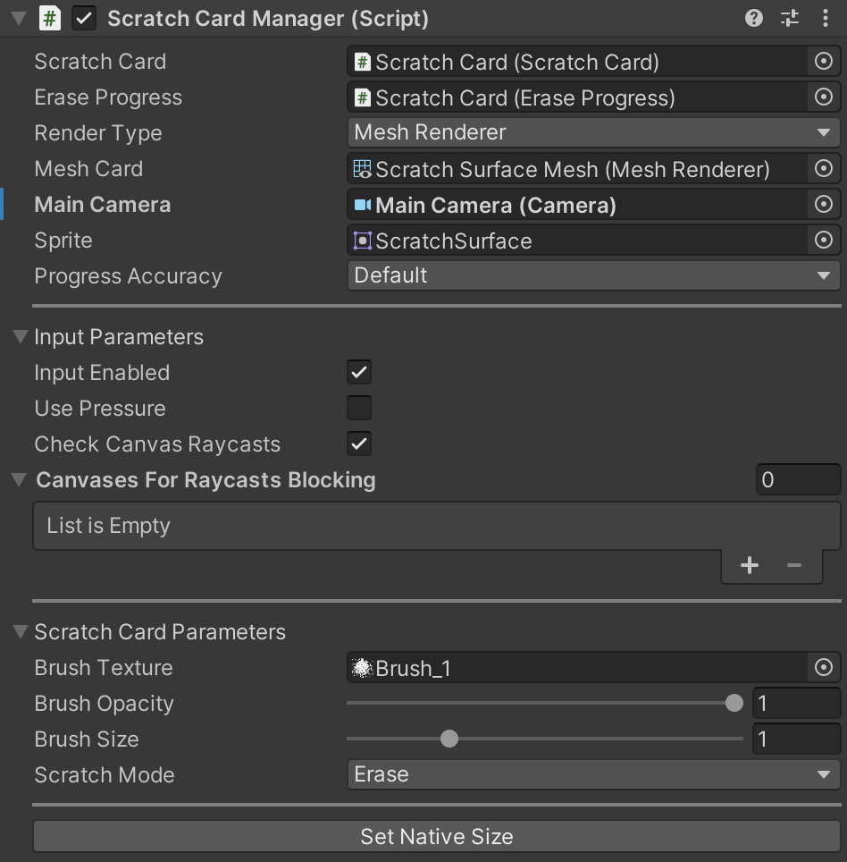
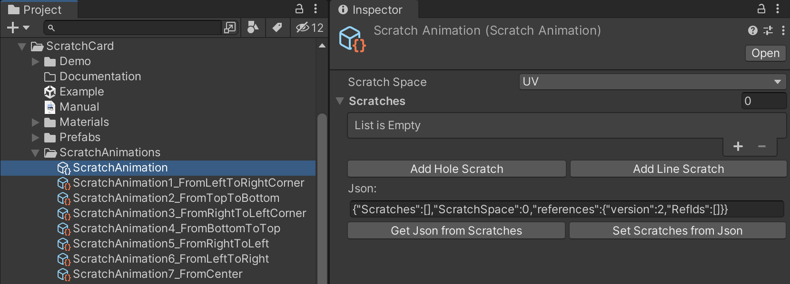

Introduction
«Scratch Card» - is an easy-to-use asset, which allows you to create scratch cards! All you need is add a
prefab, choose your scratch sprite and set up a few parameters!
With «Scratch Card», you can scratch on components such as
MeshRenderer,
SpriteRenderer, and
Image.
Asset supports Standard, URP, and
HDRP pipelines; works with Input Manager (Old)
and Input System Package (New).
No need to add any colliders for scratching.
Requirements
For the correct work, «Scratch Card» requires:
How do I upgrade?
First, back up your project.
Next, update the asset to the latest from Asset Store using Package Manager (Windows -> Package
Manager).
The asset has a comparison list of APIs with changes. To check it, open the v.2.0_API_Changes.pdf file.
Also, check out this section: Upgrading from version 1.x to 2.x.
If you have any issues or errors, contact me. I'll be happy to help!
Quick Start
Add a prefab to the scene from path Assets/ScratchCard/Prefabs/ScratchCard.prefab. In another way, add ScratchCard prefab to the scene by clicking the right mouse button in the Hierarchy Window or using Unity menu: GameObject -> Scratch Card -> ...:
Set Main Camera and Sprite for scratching:
That's all, your Scratch Card is ready!
ScratchCardManager
The «ScratchCard» prefab contains ScratchCardManager component that manages scratch and erase progress logic, let’s look at the component parameters: - Scratch Card - a reference to the ScratchCard component;
- Erase Progress - a reference to the EraseProgress component;
- Main Camera - a reference to the Camera component, if field doesn't have value Camera.main will be used;
- Render Type - render type of the scratch surface object, can be: MeshRenderer, SpriteRenderer and Image. Choose the corresponding component to Render Type:
- Mesh Card - a reference to the MeshRenderer component;
- Sprite Card - a reference to the SpriteRenderer component;
- Image Card - a reference to the Image component;
- Sprite - a sprite for scratch surface;
- Input Enabled - whether to enable input;
- Use Pressure - whether to use pressure with the input (like Apple pencil or any other tablet pen/touch device that support pressure);
- Check Canvas Raycasts - prevent painting on components if any other canvas component lays above the scratch object;
- Canvases For Raycasts Blocking - Canvases to ignore raycasts (children objects of Canvas will prevent scratching if they lay above scratch object);
- Brush Texture - brush texture for scratching;
- Brush Opacity - brush texture opacity;
- Brush Size - size of the brush;
- Scratch Mode - scratch mode can be «Erase» or «Restore». In Restore mode, user interactions restoring scratch card object instead of erasing;
How it works
ScratchCardManager component manages ScratchCard and EraseProgress components. ScratchCard component creates RenderTexture and paints on it with user input. EraseProgress component calculates an average red color of ScratchCard RenderTexture to get its scratch progress value.
Animations
From version 2.0 asset supports scratch animations. Scratch Animation is the sequence of input data to simulate scratching. Scratch animation can be created manually or recorded as a sequence of user input actions.
Scratch Animation stores in the ScriptableObject that contains data about positions, brush pressures and timings of the scratch animation.
Asset has built-in scratch animations, which are located by the path: Assets/ScratchCard/ScratchAnimations/.
Play scratch animation
You can use built-in animations or create a new one.
To play scratch animation, add component ScratchAnimator to the GameObject with ScratchCardManager component. After, you need to set
a ScratchAnimation object into Scratch Animation field:

ScratchAnimator component will play scratch animation in the playmode.
To prevent playing on start, you can turn off flag PlayOnStart and manage it using code.
Record scratch animation
To create a new scratch animation use Unity menu:
Assets -> Create -> Scratch Card -> Scratch Animation:

Scratch Animation can be created by repeating user input interactions in the playmode or manually.
Let's look on the first way to create scratch animation:
After creating a Scratch Animation ScriptableObject,
add a component ScratchAnimationRecorder to the GameObject with ScratchCardManager component and choose a Scratch Animation:

After enter playmode, user input interaction will be written to the Scratch Animation ScriptableObject by ScratchAnimationRecorder.
Let's look at the manual way to create scratch animation. You can create scratch animation using and buttons:
-
button adds data for hole scratching: position, brush scale and time of the action;
button adds data for line scratching: position, brush scale and time of the action for start and for end of the segment.
Let's add a hole and line data for example:
Note that for Scratch Space UV, you need to use UV-coords for scratching (from 0 to 1), in case of Scratch Space Texture, you need to use texture coordinates.
API Help
ScratchCardManager
ScratchCardManager component creates and configures ScratchCard and EraseProgress.
Main public fields, properties, and methods:
public ScratchCard Card - a reference to ScratchCard component;
public EraseProgress Progress - a reference to EraseProgress component;
public ScratchCardRenderType RenderType - render type of scratch card: MeshRenderer, SpriteRenderer or CanvasRenderer;
public MeshRenderer MeshRendererCard {...} - reference to MeshRenderer;
public SpriteRenderer SpriteRendererCard {...} - reference to SpriteRenderer;
public Image CanvasRendererCard {...} - reference to Image;
public bool ScratchSurfaceSpriteHasAlpha - whether sprite for scratching has alpha-channel;
public ScratchMode Mode {...} - scratch mode can be «Erase» or «Restore». In Restore mode, user interactions restoring scratch card object instead of erasing;
public Camera MainCamera {...} - Main Camera of the scene;
public Sprite ScratchSurfaceSprite {...} - a sprite for scratching;
public ProgressAccuracy ProgressAccuracy {...} - progress accuracy can be «Default» or «High».
public Texture BrushTexture {...} - brush texture for erasing;
public float BrushSize {...} - brush size;
public float BrushOpacity {...} - brush opacity value, with small amount (~0.1) user can scratch with opacity;
public bool InputEnabled {...} - whether input is enabled;
public bool UsePressure {...} - whether to user pressure for scratching. Can be useful for
pen, tablet, and stylus support or
touch device that support pressure;
public bool CheckCanvasRaycasts {...} - whether to prevent scratching if any other canvas component lays above the scratch card object;
public Canvas[] CanvasesForRaycastsBlocking {...} - canvases that will be used to check if raycast is blocking scratch card object;
public void Init() - initialize scratch card manager;
public void InitSurfaceMaterial() - initialize scratch card material;
public bool TrySelectCard(ScratchCardRenderType renderType) -to activate selected scratch card type;
public void SetNativeSize() - to set scratch card native size.
ScratchCard
ScratchCard component creates and configures RenderTexture, gets data from the InputController, then renders the quads into RenderTexture.
Main public fields, properties, and methods:
public event Action<ScratchCard> OnInitialized - an event for ScratchCard initialization, returns ScratchCard instance;
public event Action<Vector2, float> OnScratchHole - an event for scratch hole, arguments: screen position and pressure;
public event Action<Vector2, float> OnScratchHoleSucceed - an event for scratch hole, arguments: screen position and pressure. Will be invoked if hole intersects scratch card bounds;
public event Action<Vector2, float, Vector2, float> OnScratchLine - an event for scratch line, arguments: screen positions and pressure;
public event Action<Vector2, float, Vector2, float> OnScratchLineSucceed - an event for scratch line, arguments: screen positions and pressure. Will be invoked if line intersects scratch card bounds;
public Transform SurfaceTransform - to transform of surface object;
public float BrushSize - a size of the brush;
public Quality RenderTextureQuality - the quality(size) of RenderTexture texture: High, Medium, Low;
public RenderTexture RenderTexture {...} - RenderTexture for scratching;
public ScratchMode Mode {...} - scratch card mode: «Erase» or «Restore»;
public bool IsScratched {...} - returns if user is scratched surface currently (input processed and some part of texture was scratched, if set as true,
EraseProgress will update progress value);
public bool IsScratching {...} - returns if user is tried scratch surface currently (input processing);
public bool Initialized {...} - returns if ScratchCard initialized;
public BaseData ScratchData {...} - BaseData instance, class for converting screen-space coords to RenderTexture position;
public ScratchCardInput Input {...} - ScratchCardInput instance, class for processing user input;
public void Init() - initialize ScratchCard;
public void SetRenderType(ScratchCardRenderType renderType, Camera mainCamera) - set render type of ScratchCard;
public void Fill(bool setIsScratched = true) - fills RenderTexture with white color (100% scratched surface), argument - set IsScratched property to true;
public void Clear(bool setIsScratched = true) - fills RenderTexture with clear color (0% scratched surface), argument - set IsScratched property to true;
public void ScratchHole(Vector2 position, float pressure = 1f) - scratches hole using texture position;
public void ScratchLine(Vector2 startPosition, Vector2 endPosition, float startPressure = 1f, float endPressure = 1f) - scratches line using texture positions;
public Texture2D GetScratchTexture() - returns scratch texture.
There are possible memory leaks in Unity if the created texture is not destroyed completely
EraseProgress
EraseProgress component calculates scratching progress in the range from 0 to 1, where 0 - the card is scratched completely, 1 - the scratch surface is whole.
It creates and configures RenderTexture, and then shader calculates the average red-channel value of
ScratchCard RenderTexture.
Component supports two modes of getting scratch progress:
1) In the case of «Default» accuracy, progress will be calculated in the current frame, but with some inaccuracy. Using «Default» accuracy
component samples ScratchCard RenderTexture 225 times (15 times by horizontal and 15 times by vertical) in MaskProgress shader.
It is not recommended to increase the count samples, because a few users reported problems with 16x16 or more samples on some Android devices.
2) In the case of «High» accuracy, component will use AsyncGPUReadback if
SystemInfo.supportsAsyncGPUReadback is supported
(if it's not, ProgressAccuracy will be switched to «Default»). High accuracy will provide accurate progress calculation, but with delay in a few frames (often 2 frames).
Main public fields, properties, and methods:
public event Action<float> OnProgress - invokes, when user scratches/restores surface;
public event Action<float> OnCompleted - invokes, when user completed scratching/restoring surface;
public ScratchCard Card { ... } - a reference to the ScratchCard component;
public ProgressAccuracy ProgressAccuracy { ... } - progress accuracy can be «Default» or «High»;
public float GetProgress() - returns scratch erase progress in range from 0 to 1;
public void UpdateProgress() - updates scratch progress;
public void ResetProgress() - resets isCompleted flag for further interaction.
ScratchAnimation
The ScriptableObject that contains data about positions, pressures and timings of the scratch animation.
Main public fields, properties, and methods:
public ScratchAnimationSpace ScratchSpace - space for scratching, can be UV or Texture. In case of UV,
ScratchAnimation will store UV coordinates of scratching, in case of Texture ScratchAnimation will store Texture positions of scratching;
public List<BaseScratch> Scratches - scratches data of dots and lines;
public string ToJson() - return serialized instance of ScratchAnimation in json format;
public void FromJson(string json) - deserialize instance of ScratchAnimation from string in json format.
ScratchAnimator
The Component that animates scratching using ScratchAnimation.
Main public fields, properties, and methods:
public event Action OnPlay - to start playing animation event;
public event Action OnPause - to pause playing animation event;
public event Action OnStop - to stop playing animation event;
public event Action OnCompleted - to finish playing animation event;
public ScratchCard ScratchCard - a reference to the ScratchCard component;
public ScratchAnimation ScratchAnimation - a reference to the ScratchAnimation ScriptableObject;
public bool PlayOnStart - whether to play on Start method;
public bool IsPlaying {...} - returns if animation is playing;
public void Play() - to play animation;
public void Pause() - to pause animation;
public void Stop() - to stop animation.
ScratchAnimationRecorder
The Component that records user input interaction with the ScratchCard into ScratchAnimation..
Main public fields, properties, and methods:
public ScratchCard ScratchCard - a reference to the ScratchCard component;
public ScratchAnimation ScratchAnimation - a reference to the ScratchAnimation ScriptableObject;
public ScratchAnimationSpace AnimationSpace - a space for scratching, can be UV or Texture. In case of UV,
ScratchAnimation will store UV coordinates of scratching, in case of Texture ScratchAnimation will store Texture positions of scratching;
public void Flush() - write saved data to the ScratchAnimation ScriptableObject.
Frequently used methods
Check if user scratched 90%+ of surface:
[SerializeField] private ScratchCardManager cardManager; //assign reference to the ScratchCardManager component in the Inspector
private void Start()
{
cardManager.Progress.OnProgress += OnScratchProgress;
}
private void OnScratchProgress(float progress)
{
if (progress >= 0.9f)
{
cardManager.Progress.OnProgress -= OnScratchProgress;
Debug.Log($"User scratched {Math.Round(progress * 100f, 2)}% of surface");
}
}
Clean the surface (set 100% scratched):
[SerializeField] private ScratchCardManager cardManager; //assign reference to the ScratchCardManager component in the Inspector
...
cardManager.FillScratchCard();
Restore the surface (set 0% scratched):
[SerializeField] private ScratchCardManager cardManager; //assign reference to the ScratchCardManager component in the Inspector
...
cardManager.ClearScratchCard();
Change scratch sprite in runtime:
[SerializeField] private ScratchCardManager cardManager; //assign reference to the ScratchCardManager component in the Inspector
[SerializeField] private Sprite sprite; //assign reference to the Sprite in the Inspector
...
cardManager.ScratchSurfaceSprite = sprite;
You can get scratch texture in runtime (note that it should be destroyed as texture creation is definitely a possibility for memory leaks in Unity if you're not disposing of the old ones properly):
[SerializeField] private ScratchCardManager cardManager; //assign reference to the ScratchCardManager component in the Inspector
...
var texture = cardManager.Card.GetScratchTexture(); //get scratch texture
User can scratch surface and restore it, to do that, set scratch mode to Restore using code:
[SerializeField] private ScratchCardManager cardManager; //assign reference to the ScratchCardManager component in the Inspector
...
cardManager.Mode = ScratchMode.Restore;
For switching back to erase mode, set mode:
cardManager.Mode = ScratchMode.Erase;
You can scratch holes and lines from code:
[SerializeField] private ScratchCardManager cardManager; //assign reference to the ScratchCardManager component in the Inspector
...
cardManager.Card.ScratchHole(new Vector2(100f, 100f)); //draws hole in [100, 100] texture (pixel) position
cardManager.Card.ScratchLine(new Vector2(100f, 100f), new Vector2(200f, 200f)); //draws line from [100, 100] to [200, 100] in texture (pixel) positions
You can scratch using transform position:
[SerializeField] private ScratchCardManager cardManager; //assign reference to the ScratchCardManager component in the Inspector
[SerializeField] private Transform someTransform; //assign reference to the Transform component in the Inspector
...
//scratch using transform position:
var position = cardManager.MainCamera.WorldToScreenPoint(SomeTransform.position);
cardManager.Card.Input.Scratch(position);
Upgrading from version 1.x to 2.x
After upgrading from version 1.x to 2.x, prefab can lose reference to card object as types of fields were changed from
GameObject to
MeshRenderer,
SpriteRenderer and
Image.
To fix type mismatch issue, asset has MigrationHelper class, that automatically updates ScratchCardManager fields. All you need to do is open
in the Editor your scenes/prefabs that contains ScratchCardManager component. MigrationHelper will upgrade fields and print to the
Console result of the migration:
Note that for successful migration GameObject with ScratchCardManager must be active.
Contacts
Please let me know if you have any questions, ideas, or suggestions.If you require support, please provide your invoice number. The more information you provide, the more effectively I can assist you.
E-mail: unitymedved@gmail.com